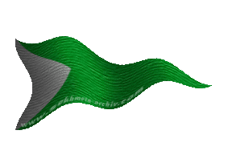
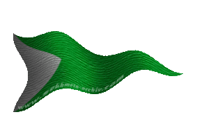

| Übersicht,
Anschläge und Stammtisch (RPG) |
|
Möbelbauer gesucht!
|
Icke wieder
  |
Die F R O S T G I L D E sucht feste Möbellieferanten für das
 Möbelhaus links neben Oneiros Möbelhaus links neben Oneiros
Gesucht werden Hersteller für:

Stühle werden in der Holzhütte hergestellt. Benötigt wird ein Arbeiter mit einem Handwerksskill von 95.

Bärenfelle werden in der Jagdhütte hergestellt. Benötigt wird ein Arbeiter mit einem Handwerksskill von 95.

Blumenkübel werden in der Jagdhütte hergestellt. Es wird lediglich ein Handwerksskill von 10 benötigt aber optimaler Weise könnt Ihr selbst Pilze sammeln.

Kamine werden im Steinbruch hergestellt. Benötigt wird ein Arbeiter mit einem Handwerksskill von 95.
Ziel ist es einen Ort für ein umfassendes Sortiment an Einrichtungsgegenständen zu etablieren.
Bei Interesse oder für weitere Fragen entsendet mir Euer Brieftier.
Ein Herz fürs Mögliche
Ottor Waefre
PS. Es werden echte Handwerker gesucht und keine Vermöbler, keine Möbbels oder Gemöbbelten, keine Mögler oder Mörgler oder,…
PPS. Wer noch keine eigene Bleibe hat, kann sich bei mir einen Tipp abholen.
Fürst Ottor Waefre,
Vorsteher von Oneiros
Zur 15. Stunde am 88.Blumenmond im Jahre 451 |
17.07.12 16:35
 |
|
Icke wieder
|
Ein Exklusivhandelsvertrag für die Bärenfelle wurde vereinbart.
In Kürze werden über dem Handelsposten links neben Oneiros auch Teppiche und Felle angeboten!
Fürst Ottor Waefre,
Vorsteher von Oneiros
Zur 21. Stunde am 11.Erntemond im Jahre 451 |
20.07.12 18:46
|
|
Icke wieder
|
Es werden immer noch Hersteller für Stühle, Blumenkübel und Kamine gesucht.
Die Ressourcen für die Herstellung dieser Möbelstücke stelle ich (bei Blumenkübel lohnt es sich jedoch selbst Pilze sammeln zu können).
Wenn jemand Interesse hat, aber noch Fragen offen sind, schickt mir Eure Postratten.
Fürst Ottor Waefre,
Vorsteher von Oneiros
Zur 3. Stunde am 40.Erntemond im Jahre 451 |
27.07.12 9:05
|
|
| Agrippa Feuerhauch dè Arsakes (RIP) |
Ich kann euch mit Blumenkübel bewerfen, aber ich glaub das sucht ihr nicht, oder???
Baronesse Agrippa dè Arsakes,
Vorsteherin von Nebelküste,
Verlobte des ehrenwerten Thelarion Feuerhauch
Zur 19. Stunde am 42.Erntemond im Jahre 451 |
27.07.12 23:49
|
|
Tar Aldarion
 |
Wenn Ottor gut im Fangen ist, passt das doch vielleicht ganz gut. Aber erfahrungsgemäß wird das doch eher schmerzhaft werden.
Veteran Tar Aldarion,
Vorsteher von Südliche Pforte des Torfreichs
Zur 21. Stunde am 74.Erntemond im Jahre 451 |
04.08.12 11:31
|
|
Icke wieder
|
Hmpf... *kopfreib* Zum Glück sind die Tische robuster!
Fürst Ottor Waefre,
Vorsteher von Oneiros
Zur 20. Stunde am 75.Erntemond im Jahre 451 |
04.08.12 17:00
|
|
Icke wieder
|
Kaminexklusivvertrag wurde soeben unterschrieben.
Es sind nur noch Blumenkübel und Stühle offen.
Fürst Ottor Waefre,
Vorsteher von Oneiros
Zur 8. Stunde am 80.Erntemond im Jahre 451 |
05.08.12 18:09
|
|
Arthwr Dyddplentyn
   |
Nix soo zaghaft,such driiiingend Kubel fur Blume,sons Eheweib mir Auge auskratz!
Halo Agrippa,nix Ottor bewerf,liba mich mit 4 Stuck...
Kardinal Arthwr Dyddplentyn,
Vorsteher von Horkfeste,
Kardinal im Dienste des einzig wahren Glaubens an Urvan,
Ehemann der reizenden Chihiro Takeshi,
Kuchemampf- un Birtrinkgroßmeista
Zur 15. Stunde am 83.Erntemond im Jahre 451 |
06.08.12 12:38
|
|
Icke wieder
|
Regale werden auch bald angeboten, es fehlen Hersteller für Stühle und Blumenkübel.
Es ist kein riesen Absatz aber ein kleiner Nebenverdienst und eine gute Tat für die Wohnqualität auf der Scherbe!
Fürst Ottor Waefre,
Vorsteher von Oneiros
Zur 14. Stunde am 27.Dunkelfrost im Jahre 451 |
14.08.12 10:51
|
|
Icke wieder
|
Die Exklusivverträge sind erst einmal vergeben! Danke für die vielen Anfragen.
Fürst Ottor Waefre,
Vorsteher von Oneiros
Zur 22. Stunde am 48.Dunkelfrost im Jahre 451 |
19.08.12 10:19
|
|
Übersicht,
Anschläge und Stammtisch (RPG)
|